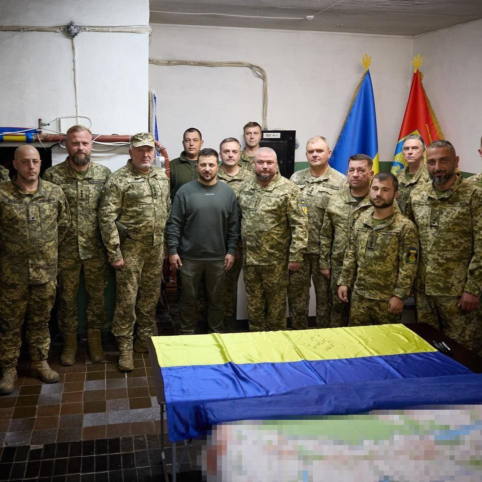

Моменти для запам'ятовування


У День захисника України ми вшановуємо пам'ять усіх, хто віддав життя та вітаємо тих, хто нині бореться за наше майбутнє. Крізь століття український народ знаходився в стані боротьби за своє існування, за свою окремішність, за свою ідентичність. Покоління за поколінням ставали до бою, захищаючи свою плодючу землю, родину, віру та врешті націю. "Ми шануємо пам'ять павших навіть тоді, коли обличчя зникають з нашої пам'яті..."
Зустрічайте сміливців України, які рішуче стояли за нашу націю, незважаючи ні на що. Їхній непохитний дух підтримує вогонь свободи, освітлюючи шлях майбутнім поколінням.
Після здобуття незалежності захисників Батьківщини за
радянським звичаєм вшановували 23 лютого. Вперше День
захисників в Україні почали відзначати у 2014 році за
указом президента Петра Порошенка. Свято прив'язали до
християнської урочистості Покрови Пресвятої Богородиці
- 14 жовтня. Покрову дуже шанували запорізькі козаки.
2023 року День захисника України перенесли на 1 жовтня
за указом президента Володимира Зеленського. Свято змінило
дату через реформу церковного календаря. З 1 вересня ПЦУ
переходить на новоюліанський церковний календар, де всі
свята відзначаються на 13 днів раніше. Наприклад, Покрова
Пресвятої Богородиці замість 14 жовтня святкуватимуть 1
жовтня. А разом із Покровою на 1 жовтня переноситься і
дата Дня захисників.
Після здобуття незалежності України День захисника Вітчизни, як і у Росії та інших пострадянських країнах, традиційно святкувався 23 лютого. Проте події 2014 року призвели до створення власного свята в Україні, яке пов'язане із козацькими традиціями. Сьогодні 23 лютого в Україні вже не є національним святом, оскільки в країні-агресорі РФ цей день, як і раніше, відзначається і використовується у військовій пропаганді. До 1992 року цей день був також пов'язаний із радянською армією, яка не підтримувала ідею незалежності України та співпрацювала з нацистською Німеччиною на початку Другої світової війни. Також важливо пам'ятати, що лише через день після "Дня захисника" Росія розпочала повномасштабну війну проти України.